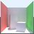

RENDERING
some rendering-related development projects
MiniLight
- Minimal global illumination renderer
- MiniLight is a minimal global illumination renderer: an attempt to distill the essentials, in a clear form. Open-source C, OCaml, Scheme, and others, command-line app. Mac, Linux, and Windows platforms. (Caution: This page may include an equation.)
Perceptuum 2
 Global illumination renderer
Global illumination renderer- An experimental physically-based renderer, with progressive refinement, frame-coherent/noise-avoiding sampling, and generalised BRDFs. Open-source (GPL) C++.
P3 ToneMapper
 Tone mapper component
Tone mapper component- Transforms a high-dynamic-range image into a low-dynamic-range image. Implementation of Ward/Larson's 1997 technique. Open-source (LGPL) C++, command-line tool and dynamic library. Windows and Linux platforms.
P3 WhiteBalancer
 White Balancer component
White Balancer component- Removes the color cast from an image. Command-line tool and dynamic library. Windows and Linux platforms.
Octree
 General octree framework
General octree framework- Octree to store any object type, and apply any query algorithm. Uses externalised virtual pattern to be non-intrusive. Mixes genericism and polymorphism for minimal compiled size. Open-source (BSD new) C++ and Ruby. Ruby version here.
P3 Architecture
- Renderer architecture article
- Formalised ideas for a new renderer version. But it is more than year old, and now I think I would do it all differently again...